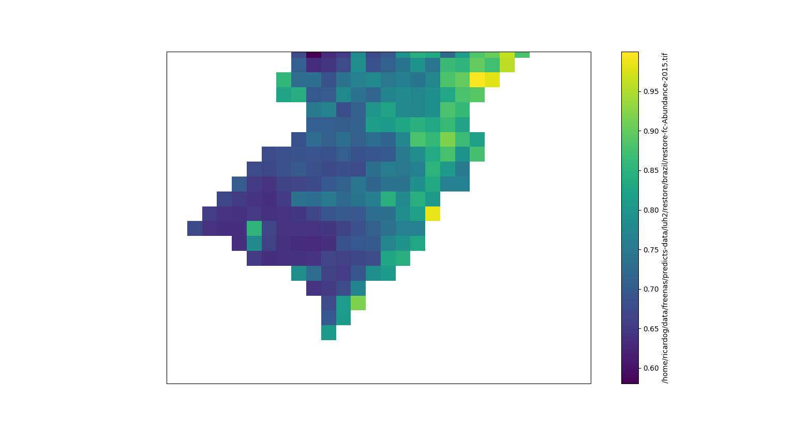
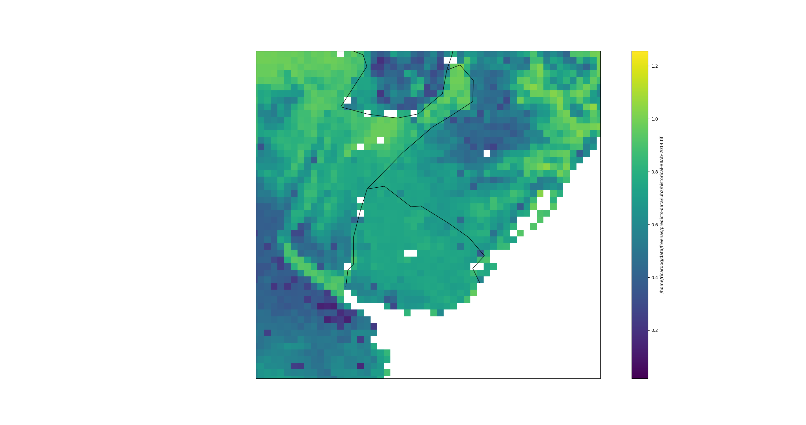

Structure of PREDICTS models
sqrt.rs.abund ~ globiom_LU_proj * poly(logHPD30sec, 2) +
globiom_LU_proj * poly(logRDlte2_10, 2) +
(1 | SS) + (1 | SSB)
globio_LU_projlogHPD30sec, logRDlte2_10bii = inv_xform(abundance) * inv_xform(comp_sim)
Table mapping from key to value
students = {"Cristina": "Brazil",
"Katia": "Mexico",
"Claudia": "Portugal",
"Sam": "England"
}
print(students["Katia"])
Convert R model to Python code
Run explicitly
r2py final_abund_model.rds
Writes final_abund_model.py (if curious)
Mostly under-the-hood
Some properties carry forward
def output():
return "sqrt_rs_abund"
def output_range():
return (0.0, 1.0)
def func_name():
return "final_abund_model"
Others handle by hand (max, min)
rs = RasterSet({"cs": Raster("/mnt/predicts/rcp/restore/brazil",
"LANDUSE_FC-CompSimAb-2020.tif"),
"ab": Raster("/mnt/predicts/rcp/restore/brazil",
"LANDUSE_FC-Abundance-2020.tif"),
"bii": "ab * cs"
"x": "(ab + 1) * (cs + 1)"
})
data, meta = rs.eval("bii", quiet=True)
sqrt.rs.abund ~ globiom_LU_proj * poly(logHPD30sec, 2) +
globiom_LU_proj * poly(logRDlte2_10, 2) +
(1 | SS) + (1 | SSB)
def inputs():
return ['globiom_lu_proj_cropland', 'globiom_lu_proj_forest',
'globiom_lu_proj_oth_agri', 'globiom_lu_proj_pasture',
'globiom_lu_proj_plt_for',
'globiom_lu_proj_secondary_intermediate',
'globiom_lu_proj_secondary_young', 'globiom_lu_proj_urban',
'log_hpd30sec', 'log_r_dlte2_10']
Write a script to compute BII
Read existing data
Write to work2 folder
#!/usr/bin/env python3
import rasterio
from rasterset import RasterSet, Raster
rs = # Add code here
data, meta = rs.eval("name", quiet=True)
# Change scenario, name, year
with rasterio.open("{scenario}-{name}-{year}.tif",
"w", **meta,) as dst:
dst.write(data.filled(), indexes=1)
Write a script to project abundance
#!/usr/bin/env python3
import rasterio
from projutils import hpd
from rasterset import RasterSet, Raster
import r2py.modelr as modelr
# Use the final_abund_model.rds model
modelr.load("/mnt/predicts/models/restore/brazil/2020-10-27/base/")
rs = # Add code here
# Don't forget to back-transform
data, meta = rs.eval("name", quiet=True)
# Change scenario, name, year
with rasterio.open("{scenario}-{name}-{year}.tif",
"w", **meta,) as dst:
dst.write(data.squeeze().filled(), indexes=1)